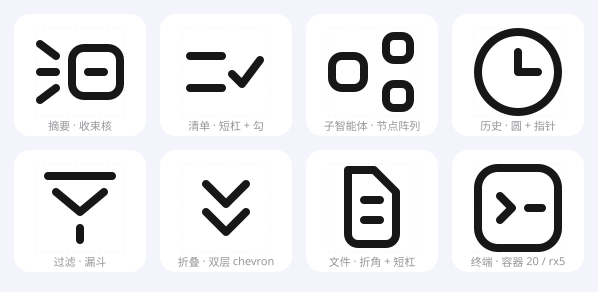

| 应用 | 摘要能力 | 入口与图标形态 |
|---|---|---|
| Zoom AI Companion | 会议摘要 + 行动项 | 工具栏 Sparkle（星芒）图标 → 非模态浮窗；会中右上角有持续闪烁的钻石标识 |
| Slack AI | 频道 Recap / 线程摘要 | Sparkles 图标按钮 → 侧边面板；「Catch up」每日摘要流 |
| Gmail + Gemini | 「Summarize this email」 | 邮件顶部文字按钮 → 右侧 Gemini 面板 |
| Notion AI | 页面摘要（行首空格 → Summarize） | 菜单项为主，不依赖专用图标 |
| YouTube | 评论区按主题摘要 | Sparkle Tab 标签 |
| Amazon / Booking / Etsy | 评价区自动摘要 | 无入口图标，内容前挂 AI 标识/sparkle 徽标 |
| Readwise Reader | 文章右侧栏常驻摘要（Ghostreader） | 侧栏摘要区 + 幽灵小图标切换模型 |
| Google Docs / Meet | 「Help me write」/ 会议纪要 | 铅笔图标、侧边 chip |
| 飞书妙记 / Otter / Granola | 会议纪要摘要、章节速览 | 列表/大纲式入口，多与「纪要」图标复用 |
结论：行业内「摘要」入口没有统一图标——动作型入口多用 Sparkle（表示"AI 来做"），内容型摘要挂在侧栏/侧板，靠文案 + 位置而不是图形承载语义。这与上一轮报告的判断一致：图标可以讲"压缩/收束"，但清单与记录必须交给展开后的面板。你的场景（点击后展开推进清单 + 子智能体记录）里，icon 适合讲"收束成核"，面板里再用列表与节点连线讲其余两层语义。
复测修正（第二版）：用亚像素墨量法逐图标标定后确认——全组线宽严格统一为 2（物理实测 2.51px，截图按 125% 渲染 → ÷1.25 = 2.01）；容器中心线 20×20（外径 22）、圆角 5、globe 圆 r10，全部吻合 24 栅格。内部短杠与主线等粗——初版"短杠配重 2.5"是抗锯齿造成的误读，已废除。plus 图标（物理 2.81）是原图自身唯一偏差项，不继承。
| Token | 值 | 测量依据 |
|---|---|---|
grid.size | 24 × 24（截图为 125% 渲染，物理 ÷1.25） | 容器外径 27.89 物理 ÷ 1.25 = 22.3 → path 20 + stroke 2 |
stroke.width | 2（全组统一） | 亚像素墨量实测 2.51px 物理 ÷ 1.25 = 2.01；线宽不一即不合规 |
stroke.cap / join | round / round | 所有端点与拐角呈半圆收头，无方头 |
container.body | path 20×20 @ (2,2)，外径 22 | stroke 中心线距实测 25.39 物理 ÷ 1.25 = 20.3 |
container.radius | 5（path 圆角，≈25% 边长） | 角部亚像素拟合 R≈6.2 物理 ÷ 1.25 ≈ 5.0 |
bracket.radius / arm | 4 / 4 | scan 的四角：纯圆角弧 + 极短臂，不到 5px 就断 |
gap.break（轮廓断点） | 2 – 3（≈1–1.5×线宽） | 文件折角与纸边不相连、眼睛与面框不接触 |
gap.element（元素间距） | 4 – 8 | scan 十字杠与四角间距实测 8px；层叠 chevron 间距 4px |
dash.inner.length | 3 – 6 | file 正文 6.6/2.8、robot 眼睛 2.2、terminal 光标杠（设计值） |
dash.inner.weight | 2，与主线等粗 | 短杠单条精测 2.49–2.51 物理，与外框一致；"更粗"是测量污染 |
overshoot.optical | ±1 – 2 | robot 天线/耳朵、globe 圆形允许出格做光学补正 |
color.stroke.default | #96969B | 默认态灰，实测 RGB(150,150,155) |
color.stroke.active | #171718 | 激活态近黑，实测 RGB(23,23,24) |
color.bg / card | #F4F5FC #FFFFFF | 淡紫灰底 + 白色浮起卡片 |
active.card.radius | 12（@44–48px 卡片） | 激活项白色 squircle 卡片，约边长 25% 圆角 |
active.card.border | 1px rgba(23,23,24,.06) + 微投影 | 卡片有极淡描边和 1–2px 落影 |
这套图标最独特的识别点不是圆角，而是"该连的地方故意不连"。所有轮廓在以下五种位置断开：
文件折角、内容杠从不与外框相接（左：连续错误；右：断开正确示意）——凡内部元素距轮廓 ≤6px，轮廓在此处让位断开 2–3px。
scan 图标：完整方框被拆成四个"短臂圆弧"，臂长仅 4px。直角不硬画，用圆弧 + 断口表达"取景/扫描"的开放感。
terminal / plus：外框是封闭圆角矩形；而 stack 的层叠用开放式 chevron（不闭合、不回笔），封闭形 = "框住的东西"，开放形 = "动态/过程"。
robot 眼睛、terminal 命令杠、file 正文行：内部元素永远是 3–6px 的独立短杠，绝不拉通、绝不顶边；厚度与主线同为 2（复测确认，勿加粗）。
⑤ 斜线与圆做光学补正。45° 斜笔画在像素栅格上天然显细，实测中斜向读数普遍为 3px（水平 2px）；圆形（globe）允许 ±1–2px 出格。落到 SVG 上即：斜线 stroke 可 +0.25~0.5，或整体对 0.5px 栅格取半。
三条会话输入线（开放笔画，端点同落 x=6 轴、起点同落 x=2 轴）→ 圆角容器核 12×12（封闭 = 结果）→ 核内一条 4px 短杠（蒸馏出的要点）。笔画统一线宽 2；全部间隙 ∈ {2,3,4,6}，线-核、杠-壁四处间隙全部 = 2。
激活态走"核实心 + 短杠反白"；16px 降级时三条输入线减为两条，线宽保持 2 不变，只减元素不减线宽。
:root {
--icon-grid: 24; /* 画布 24×24，内容安全区 22×22 */
--icon-stroke: 2; /* @16px → 1.75，@32px → 2.5 */
--icon-cap: round;
--icon-join: round;
--icon-container-rx: 5; /* 容器 path 圆角 ≈25% 边长（角部拟合 5.0） */
--icon-bracket-r: 4; /* 取景角弧半径，臂长 4 */
--icon-gap-scale: 2 3 4 6; /* 间隙模数（=1×/1.5×/2×/3× 线宽），禁用其他值 */
--icon-gap-break: 2; /* 轮廓断点：1–1.5× 线宽 */
--icon-gap-element: 2; /* 相邻构件最小净间隙 ≥2；主次分层用 4–6 */
--icon-dash-min: 4; /* 内部短杠最短 4，最长 6 */
--icon-dash-weight: 2; /* 内部短杠与主线等粗，勿加粗（复测修正） */
--icon-overshoot: 1.5; /* 圆形/出格元素光学补正 ≤2 */
--icon-color: #96969B; /* 默认 */
--icon-color-active: #171718; /* 激活 */
--icon-card-bg: #FFFFFF; /* 激活卡片 */
--icon-card-radius: 12px; /* @44–48 卡片，≈25% */
--icon-card-border: 1px solid rgba(23, 23, 24, .06);
--icon-card-shadow: 0 1px 3px rgba(23, 23, 24, .08);
}
验收口诀：线 2 圆头；框圆角五分一；杠短四到六；见细就断开，断口一倍半；间隙只用二三四六；斜线不加磅，圆形可出格。
| 形类 | 承载语义 | 封闭？ | 断点要求 | 例 |
|---|---|---|---|---|
| 圆角容器（矩形 rx5 / 圆 r8） | 被装起来的东西：文件、终端、结果、状态 | 封闭 | 内部元素离壁 ≥3，轮廓在此断开 | 文件、终端、历史 |
| 开放笔画（chevron / 汇聚线 / 弧） | 过程与动作：展开、收束、层叠、取景 | 开放 | 笔画之间不接触，端点留 2–3 | 折叠、摘要输入线 |
| 取景角弧（r4 + 4px 短臂） | 边界、识别、扫描、框定范围 | 开放 | 四角互不相接，中间留 8 以上 | scan |
| 内部短杠（3–6px，与主线等粗） | 内容、要点、细节、光标 | — | 不顶边、不与他物相交，四周间隙 ≥2 | 正文行、眼睛、命令杠 |
| 节点单元（4–6px 小圆/圆角方） | 实例、子智能体、参与者 | 封闭 | 同层节点同尺寸同圆角；不连线，阵列表达关系 | 子智能体节点阵列 |
选形原则：一个图标 = 1 个主形（容器或开放笔画）+ 0~2 个短杠/节点。三层以上的语义不进 24px 图标，下沉到徽标层与面板层（见上一轮「语义分层卸载」）。
| # | 步骤 | 产出 / 判定 |
|---|---|---|
| 1 | 写下语义，拆到一层主语义，其余卸载到徽标层/面板层 | 一句话："这个图标只讲 X" |
| 2 | 按第六节选形类（容器 / 开放 / 取景角 / 节点） | 确定主形是否封闭 |
| 3 | 把主形落进 24 栅格：所有关键坐标落在 0.5 网格，构件尺寸取整模数（2/4/6/8/12/20） | 无 0.5 以外的奇数坐标 |
| 4 | 查「腔体约束表」再补内部细节：容器内放短杠需净腔 ≥ 短杠长 + 6；短杠一律 3–6px、与主线等粗 | dash 长度合法、不顶壁 |
| 5 | 执行断点 + 防粘连：凡两条独立笔画接近处按 2–3px 断开；语义上必须相接的合并为同一条 path 用 round join | 无相交、无"焊死"、连通域数 = 声明元素数 |
| 6 | 间隙全部对齐模数 {2,3,4,6}，同一图标内优先同档；斜线不加粗，端点落在网格交叉点；圆形允许 ±1–2 出格 | 间隙谱干净、1x 下视觉等重 |
| 7 | 做尺寸降级（见第十节），检查 16px 是否糊成一团 | 16px 仍能辨认主形 |
| 8 | 跑第八节验收清单，全部通过再入库 | 清单全绿 |
stroke 不用 fill；无内联样式、无 transform 缩放依赖| 反例 | 问题 | 正解 |
|---|---|---|
| 内部短杠顶到容器壁 | 糊成一坨，断点规则失效 | 短杠距壁 ≥3，必要时轮廓让步断开 |
| 直角硬拐、方头端点 | 破坏圆头签名，显廉价 | round cap/join，直角改圆弧 |
| 为塞语义堆三层结构 | 24px 下不可读 | 主形 + 短杠，其余卸载到面板 |
| 16px 直接等比缩小 | 线宽变 1.33，糊 | 线宽保持 1.75–2，减元素不减线宽 |
| 用填充色块表达强调 | 破坏纯线性语言 | 用线宽配重或激活色表达层级 |
| 坐标取 3.7、9.3 之类 | 1x 下抗锯齿发虚 | 取整数或 .5，优先 4 的倍数 |
| 间隙取 3.5、5 这类非模数值 | 间隙不统一，失去秩序感 | 全部对齐 {2,3,4,6}，同图标内优先同档 |
| 给斜线加粗"补视觉" | 破坏线宽恒定，凑近看粗细不一 | 线宽恒 2；光学补正只动位置（端点落格、圆形出格） |
| 两个独立 path 中途擦碰 | 粘连，缩到 16px 焊成一坨 | 要么断开 ≥2，要么合并为同一条 path 用 round join |
| 每次画新图标发明新形状 | 没有符号化，家族感崩塌 | 只用构件库五种构件拼装：容器/短杠/节点/V 形/chevron |
| 尺寸 | 线宽 | 容器圆角 | 断点 | 元素策略 |
|---|---|---|---|---|
| 32 px | 2.5 | 7 | 3 | 可加第三层细节 |
| 24 px（基准） | 2 | 5 | 2.5 | 主形 + ≤2 短杠 |
| 20 px | 2 | 4.5 | 2.5 | 保留主形，短杠取 4 |
| 16 px | 2（不减） | 4 | 2 | 减一个元素（如三线并两线） |
| 12 px | 1.75 | 3.5 | 2 | 仅保留主形轮廓，去掉全部短杠 |

摘要（收束核）/ 清单 / 子智能体节点阵列 / 历史 / 过滤 / 折叠 / 文件 / 终端 —— 全部 stroke 2、round cap、间隙只用 {2,3,4,6}、无粘连、同构重复；单文件在 examples/ 目录，均通过自动验收。
| 容器 path 尺寸 | 内部净腔 | 可容纳的内部短杠（四周间隙 2） |
|---|---|---|
| 20×20（rx5） | 16×16 | 中心线长 ≤6（终端 chevron 6 + 短杠 3.5） |
| 12×12（rx3） | 8×8 | 中心线长 ≤4（摘要核内杠 4） |
| 9×9（rx2.5） | 5×5 | 放不下（上限 1）——放大容器或去掉内部元素 |
| 6×6（rx2） | 2×2 | 只能当实心节点用 |
连接线规则：两个元素之间放一条独立连接线，需净空 ≥ 线长 + 6（两端各留 cap 1 + 间隙 2）。24px 放不下"节点-连线-节点"三层关系图——所以子智能体画成节点阵列，关系细节下沉到展开面板。
L0 具象（禁止）：画物体本身（有脸有耳的机器人）。L1 提炼（仅必要时）：保留一个几何化识别特征（文件折角、终端光标）。L2 关系符号（默认）：不画东西画关系——汇聚、收束、嵌套、阵列、层级。判据三问：画的是"东西"还是"关系"？去掉某笔还成立吗（成立即装饰，删）？构件是不是构件库里的现成货？构件库只许五种：圆角容器、短杠、节点方块/圆、V 形收口、chevron。新图标 = 旧构件的新组合，这就是"符号化"的机制。
python3 check-style.py "examples/*.svg" --scale 12
像素实测，不靠肉眼：粘连/断裂（连通域计数 vs 声明元素数，FAIL）、线宽（8 方向行程长度取最小再取中位，2±0.2，FAIL）、间隙（精确欧氏距离变换，≥2 且落模数）、墨量（9–32%，WARN）、居中（偏移 ≤0.6，WARN）。测量三坑：内切半径在 round join 处虚高（改用行程法）；chamfer(3,4) 斜线方向误差 ~8%（改用精确 EDT）；间隙读数含 1px 像素中心系统偏置。
| 项 | 规则 |
|---|---|
| 文件命名 | icon-{语义}-{形类}.svg，例 icon-summary-converge.svg；小写 + 连字符 |
| SVG 结构 | viewBox="0 0 24 24"，单一 <g stroke-width="2" fill="none" stroke-linecap="round" stroke-linejoin="round">，颜色用 currentColor 便于主题化；首行注释声明元素数：<!-- elements: 5 | 摘要·收束核 | 一句话构成 -->（自动验收靠它数连通域） |
| 不出 | 不内联 style、不用 fill 描边、不含 id 依赖、不加 padding（留白靠栅格） |
| 导出尺寸 | SVG 为主；位图出 @1x/@2x/@3x PNG，命名 -24/-48 后缀 |
| 入库 | 每枚图标附一句话语义 + 邻位冲突说明；新增前与已有图标做一次并排混淆检查 |